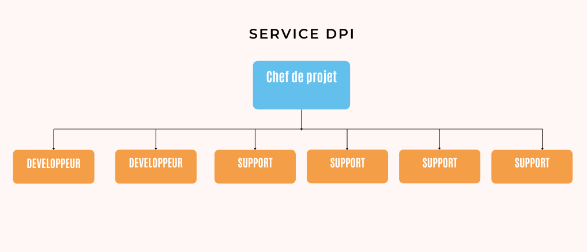
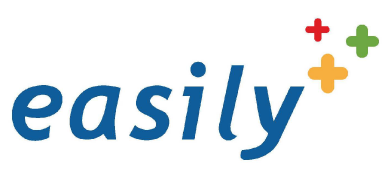

Entreprise : Hôpital Lucien Hussel
Lieu : Vienne
Date : 13 Mai au 29 Juin 2024
Service : Dossier Patient Informatisé
Contexte d'entreprise
Le Centre Hospitalier est un établissement de santé comptant environ 1800 employés et une trentaine de services médicaux. Sa mission principale est de fournir des services hospitaliers tout en assurant la gestion informatique et l’assistance des logiciels utilisés au sein des services médicaux.
Service
J'ai réalisé mon stage au service Dossier Patient Informatisé (DPI) pendant 7 semaines, avec une équipe composée d’un chef de projet, de 2 Développeurs et 4 techniciens support informatique. Ce service gère l'infrastructure logicielle et le support informatique pour l'ensemble des services médicaux de l’hôpital et d’autres hôpitaux de la région.
Le service s’occupe principalement de répondre aux appels téléphoniques internes et de régler leurs problèmes.
Mission - Création de formulaires
Problematique :
L'objectif de la mission était de mettre à disposition et adapter une quarantaine de formulaires médicaux sur l’application Web Easily, à partir de modèles existants sous le logiciel ORBIS, pour les divers services hospitaliers (dermatologie, hématologie, infectiologie, etc.).
Outils :
FormsStudio
Réalisation :
J'ai finalisé la totalité des formulaires à implémenter dans l'app Easily que je devais tester pour voir s'ils correspondent au modèle initial.
Création de formulaires dynamiques : ajustement des champs en fonction des données saisies, ajout de fonctionnalités comme des listes déroulantes à conditions.
Mission - Création de modèles de courrier
Problematique :
L'objectif de la mission était de créer 2 modèles de courrier en HTML et CSS sur le logiciel d'hospitalisation à domicile MHCare pour être mis à disposition sur le logiciel.
Outils :


Réalisation :

Je devais reproduire le modèle qui existait déjà en format papier sur le cahier des charges pour le publier sur l'application MHCare après avoir finalisé le modèle.
Mes autres tâches
Création d’équipes pour chaque service médical avec l'ajout de droits de consultation pour le service DPI.
Automatisation des entrées et sorties de données via des scripts PHP.
CSS dynamique pour le logiciel de ticketing de l'hôpital(Olympe).
Bilan du stage
Points Positifs
- Bonne équipe
- Travail constant
- Utile au service
Points Négatifs
- Manque de connaissances en médecine
Compétences Gagnées
- Maîtrise des outils de création de formulaires
- Découverte de logiciels
- Amélioration en C#, HTML, CSS